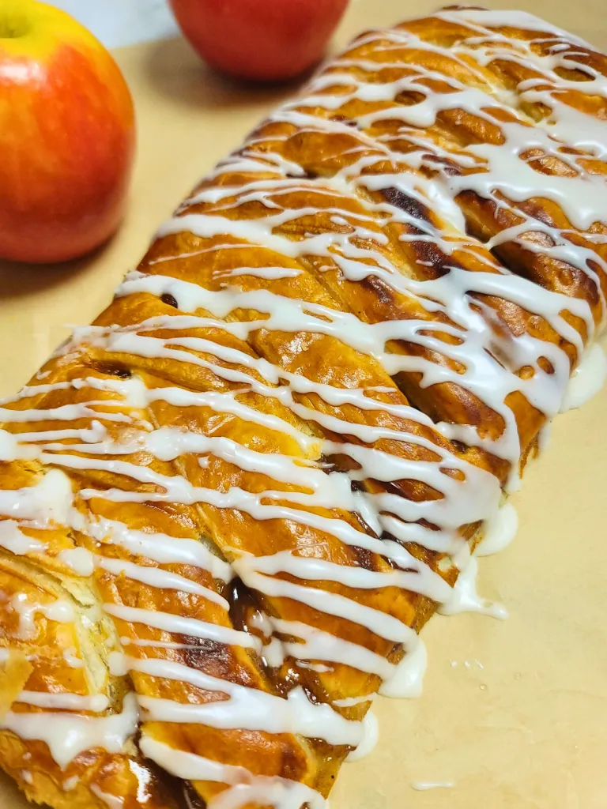

A Sweet Start to Your Day
Danish Pastry
Ingredients
- 1 cup of all-purpose flour
- 1/4 cup of water
- 1/4 cup of milk
- 1 egg
- 1/2 teaspoon of salt
- 2 tablespoons of sugar
- 1 tablespoon of active dry yeast
- 1/2 cup of unsalted butter, cold
- Fruit filling of choice (e.g., apricot, cherry, raspberry)
Instructions
- In a large bowl, mix the flour and salt. Cut in the butter until the mixture resembles coarse crumbs.
- In a separate bowl, dissolve the yeast and sugar in warm water and milk. Let it sit until frothy, about 10 minutes. Then, add the egg and mix well.
- Combine the yeast mixture with the flour mixture, stirring until a soft dough forms. Knead on a floured surface until smooth.
- Cover the dough and let it rise in a warm place until doubled in size, about 1 hour.
- Preheat the oven to 375°F (190°C). Roll out the dough on a floured surface. Cut into squares, place a spoonful of fruit filling in the center of each square, and fold the corners to the center.
- Place the pastries on a baking sheet, cover, and let rise again for about 30 minutes.
- Bake for 15-20 minutes or until golden brown. Let cool before serving.